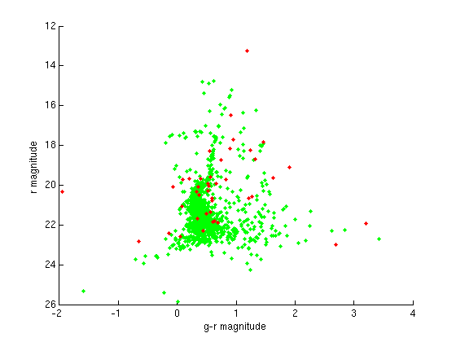

Cluster HR Diagrams
In this script HR diagrams are plotted for two globular clusters with magnitudes obtained from the SDSS online tool SkyServer. See the ASTR 121 lab Cluster HR Diagrams for a description of how to obtain the data at SkyServer.
Contents
Import Data
The data file downloaded from SkyServer can be imported using
dat1 = importdata('cluster1.dat', ',', 1); % the ',' specifies the delimeter and the number 1 specifies the number of header lines % This is the Palomar 5 cluster % Now view the header line to see the order of parameters (what each column % in the data matrix is): dat1.textdata; % and create a matrix containing the data only cluster1data = dat1.data; % Now do the same for the second cluster: dat2 = importdata('cluster2.dat', ',', 1); % Palomar 6 Cluster cluster2data = dat2.data; % Note that the g column is the 11th and the r column is the 12.
Plotting the HR diagrams
In order to plot the HR diagrams for the clusters we first want to extract the relevant data for clarity. We want two arrays containing the read and blue magnitudes.
g1 = cluster1data(:,11); r1 = cluster1data(:,12); g2 = cluster2data(:,11); r2 = cluster2data(:,12); % Now we can plot the two HR diagrams simultaneously: figure; set(axes, 'YDir', 'reverse') % Because of the reverse nature of magnitudes (brighter object has lower value) we reverse the y axis hold on; plot(g1-r1, r1,'g.') % Plots the stellar magnitudes of the first cluster with green points plot(g2-r2, r2,'r.') % plots the second cluster with red points xlabel('g-r magnitude') ylabel('r magnitude')
Interpreting HR diagrams
% Notice that the Palomar 3 SDSS field has very few stars. There is a % semblance of the main-sequence turnoff point, but it is unclear. Sadly, % there are only two clusters resolved in the SDSS field of view, as so % these are the only two in the archive. Go to the Hipparcos data archive % online for a more complete collection of magnitudes for stars in clusters % (Hipparcos covered a larger area of the sky). % Note that these clusters are not at the same distance. How does this % affect the normalization of the y axis? Could you tell the relative age % without more information, assuming the main-sequence turnoff is resolved?